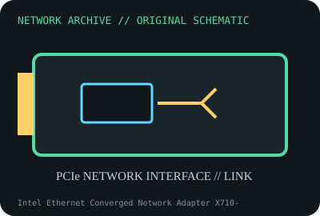

[ MODEL-SPECIFIC NETWORK HARDWARE ]
Intel Ethernet Converged Network Adapter X710-DA4
Four-port 10GbE SFP+ PCIe server adapter. Confirm exact product label and revision before applying specifications.

IDENTIFICATION: Confirm manufacturer PID, hardware revision, device ID or module suffix. Nominal standards/link rates are not measurements of payload performance.
Exact specifications and compatibility
| Dedicated subcategory | 10 Gigabit and server adapters |
|---|---|
| Exact product/model | Intel Ethernet Converged Network Adapter X710-DA4 |
| Bus, ports and physical interface | PCIe 3.0 x8; four SFP+ cages; supported DAC, AOC and optics depend on adapter qualification. |
| PHY, radio or protocol | Intel X710 controller; 10/1GbE link options and advanced offloads depend on media, NVM, firmware and driver. |
| Nominal rate (not measured) | Four nominal 10Gb/s links (40Gb/s summed line rate) does not equal measured aggregate payload. |
| Measured throughput | No measured benchmark is claimed for a physical specimen. A valid result must record host/peer, link partner, media/cable, driver/firmware, traffic pattern, test tool and duration. |
| Drivers, OS and firmware | Linux i40e driver; Windows Server and VMware releases follow Intel/OEM support matrices. NVM update must match adapter board/PSID. |
| Compatibility | PCIe x8 slot, airflow, four compatible SFP+ peer ports/media and exact driver/firmware. |
| Variant warning | X710-DA4 is four SFP+ ports; not X710-DA2, X710-T4L copper or XL710 QSFP+. Some modules may be rejected by NVM/platform policy. |
Model and revision notes
X710-DA4 is four SFP+ ports; not X710-DA2, X710-T4L copper or XL710 QSFP+. Some modules may be rejected by NVM/platform policy.
Linux i40e driver; Windows Server and VMware releases follow Intel/OEM support matrices. NVM update must match adapter board/PSID.
PCIe x8 slot, airflow, four compatible SFP+ peer ports/media and exact driver/firmware.
Archival, ESD and preservation notes
Record adapter P/N, board revision, NVM, PSID, port/MAC map and optics. Cap cages and use ESD-safe handling.
Document source URL, access date, document revision and specimen label/condition. Preserve without credentials or private configuration.
Primary manufacturer and standards sources
- Intel X710-DA4 product specificationsPrimary manufacturer or standards documentation; verify exact SKU and host revision.
- Intel Ethernet adapter downloadsPrimary manufacturer or standards documentation; verify exact SKU and host revision.
- IEEE 802.3 Ethernet standardsPrimary manufacturer or standards documentation; verify exact SKU and host revision.
Manufacturer statements cover the named part or its documented product family; the exact labeled revision and vendor compatibility list take precedence.